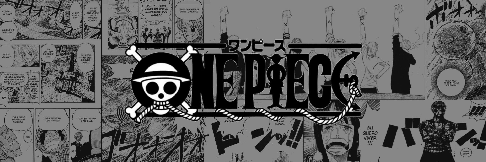

One PiecePedia
One Piece es un cómic y anime japonés de Eiichiro Oda. One Piece narra la historia de un joven llamado
Monkey D. Luffy, que inspirado por su amigo pirata Shanks, comienza un viaje para alcanzar su sueño,
ser el Rey de los piratas, para lo cual deberá encontrar el tesoro One Piece dejado por el anterior rey de
los piratas Gol D. Roger. Descubre todos los manga de esta serie tan aclamada por los lectores.